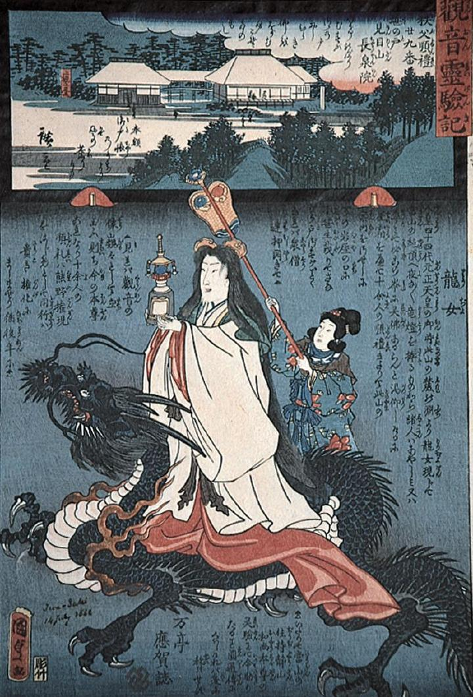

← 图鉴索引

龍に乗った龍女。宝塔を掲げている。
著作者：歌川国貞二代・歌川広重二代合作／出典：親書誌：M80_naprstek_0006：観音霊験記；カンノンレイゲンキ／日付：2011／資源識別子：M80_naprstek_0006_0001_0000
Copyright (c)2010- International Research Center for Japanese Studies, Kyoto, Japan. All rights reserved.